반사는 건축을 지울 수 있는가
Elmoghazy & Afify, 「Reflective Façades」, Buildings 13(11), 2023
모더니즘에서 부수적이던 반사가 지금은 핵심 개념 장치가 되었다. 열 개 사례의 의도를 ‘사라짐의 미학’, ‘시각적 착시’, ‘신비와 호기심’으로 묶고, 반사면이 열섬과 눈부심을 키울 수 있다고 경고한다.
거울 큐브는 사라짐의 미학을 따르되, 남쪽 반사광이 보행로로 향하는지 일조 단면으로 검토한다.
스밈 SEEP · 땅과 하늘 사이에 스며드는 파빌리온
공원의 잔디 아래에는 흙이 켜켜이 쌓인 단면이 있지만 아무도 그것을 보지 않는다. 반대로 공원에 놓이는 파빌리온은 대개 풍경 위에 하나 더 세운 상자로 남는다.
스밈은 이 관계를 뒤집는다. 보이던 상자는 거울로 지우고, 보이지 않던 땅은 유리로 연다. 건축이 무언가를 더하는 대신 땅과 하늘 사이로 스며들게 한다.
스며든다는 것은 형태를 세우는 대신 경계를 얇게 만드는 일이다. 건축의 경계면, 곧 피부가 바깥과 관계 맺는 방식을 셋으로 나눴다.
빛과 시선이 통과해 안팎이 한 장면이 된다. 로우와 슬러츠키는 재료가 비치는 실제의 투명과, 겹친 면이 동시에 읽히는 현상적 투명을 구분했다.
케페스 『시각 언어』(1944) · 로우·슬러츠키 「투명성: 실제와 현상」(1963)
스밈에서는 땅속 유리 큐브가 흙의 단면을 안으로 들인다.
표면이 주변을 비춰 형태가 풍경의 이미지로 바뀐다. 차경이 풍경을 빌려 오는 일이라면, 거울은 거꾸로 자신을 풍경에 내준다.
스미스슨 「Mirror Displacements」(1969) · 에이트킨 「Mirage」(2017)
스밈에서는 공중의 거울 큐브가 숲과 하늘을 입고 사라진다.
투명한 면이 거울에 비치거나 거울 너머가 비쳐 보일 때, 투과와 반사가 한 면 위에 포개진다.
댄 그레이엄 투웨이 미러 파빌리온 · 래리 벨 「Pacific Red II」(휘트니 비엔날레 2017)
스밈에서는 거울 큐브 안에서 위의 빛과 아래의 땅이 사방 거울에 겹친다.
투명 · 투과
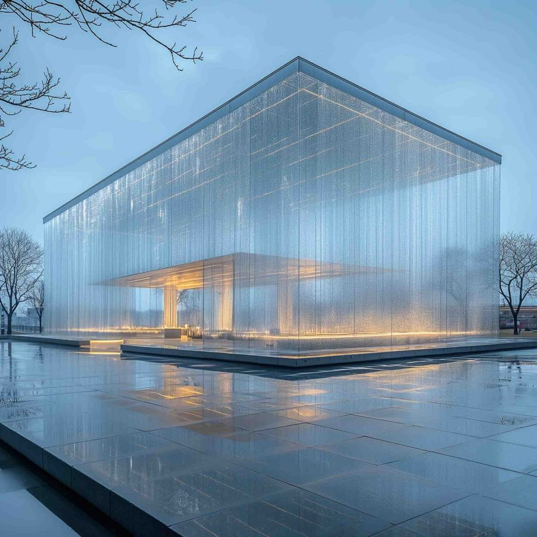
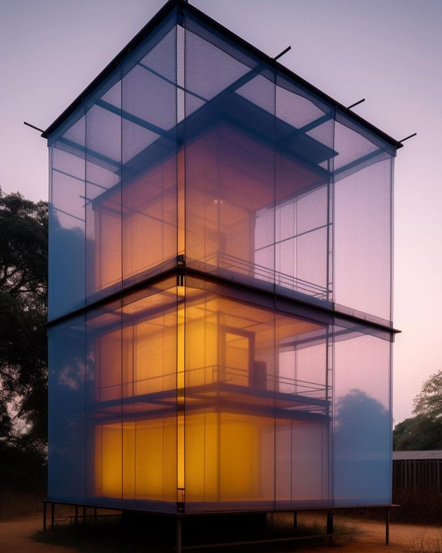
겹침 · 중첩
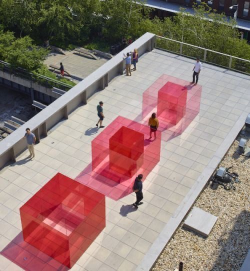
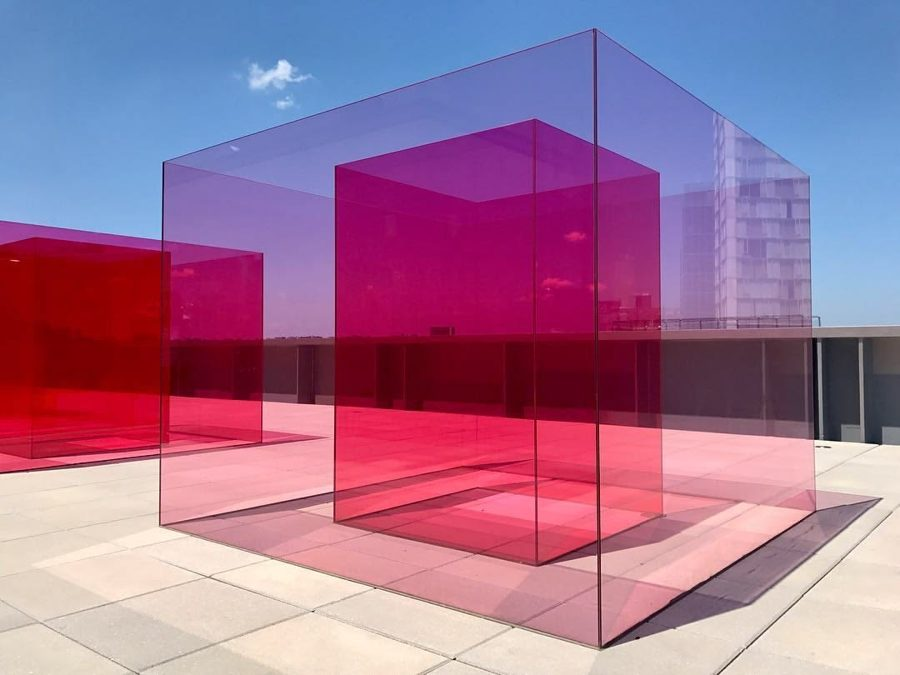
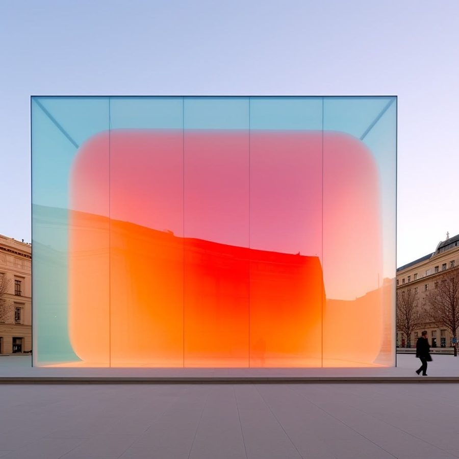
거울 · 반사
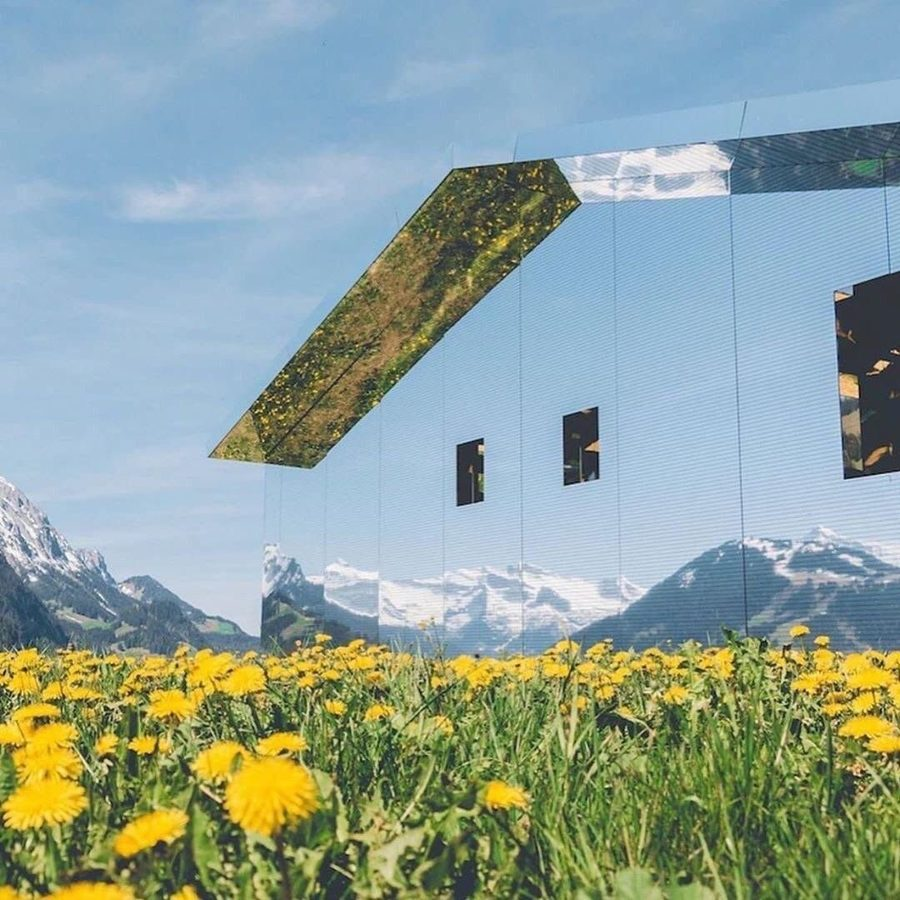
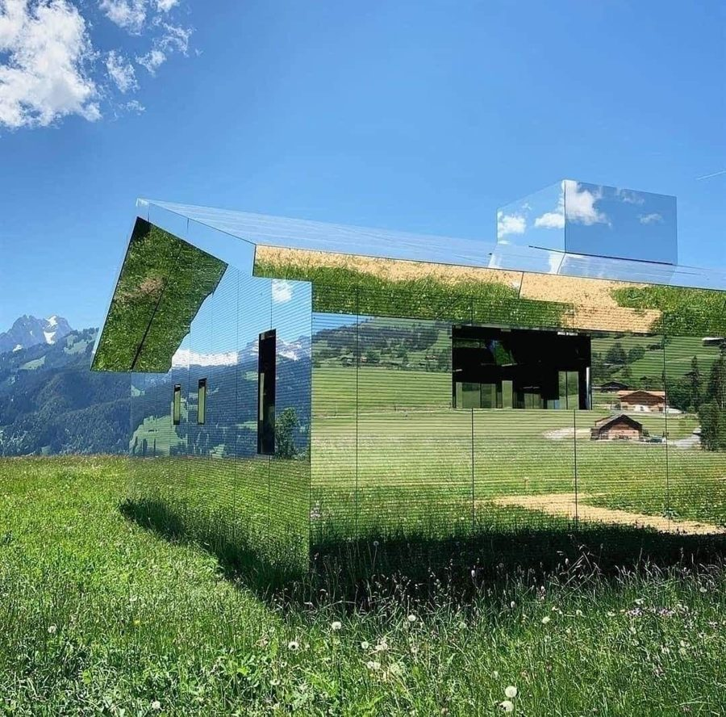
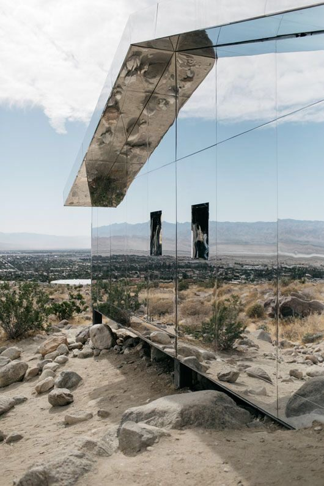
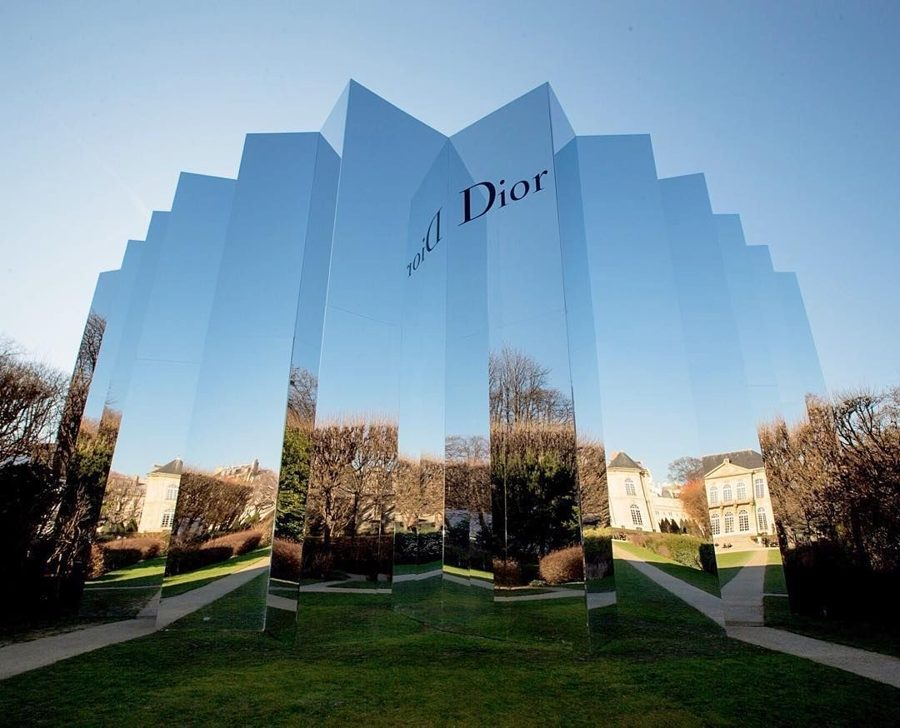
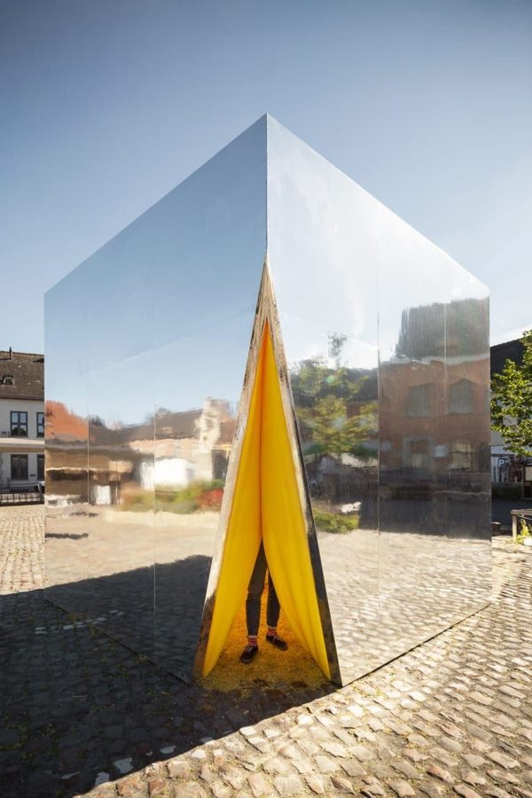
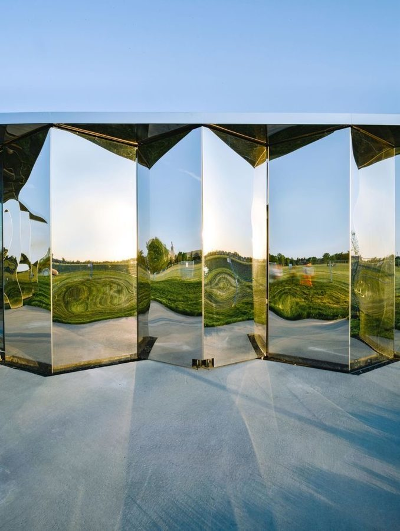
겹침: 래리 벨 「Pacific Red II」(휘트니 비엔날레 2017) 등 · 반사: 더그 에이트킨 「Mirage」(사막 2017, 그슈타드 2019), 뷔로 베탁 디올 파빌리온(로댕 미술관) 등 · 그 밖은 출처 미상 무드 이미지
반사는 건축을 지울 수 있는가
Elmoghazy & Afify, 「Reflective Façades」, Buildings 13(11), 2023
모더니즘에서 부수적이던 반사가 지금은 핵심 개념 장치가 되었다. 열 개 사례의 의도를 ‘사라짐의 미학’, ‘시각적 착시’, ‘신비와 호기심’으로 묶고, 반사면이 열섬과 눈부심을 키울 수 있다고 경고한다.
거울 큐브는 사라짐의 미학을 따르되, 남쪽 반사광이 보행로로 향하는지 일조 단면으로 검토한다.
보이지 않는 건축은 새에게도 보이지 않는다
Życzkowska & Kalińska, 「Invisible Architecture」, Teka KUiA PAN 53, 2025 · Klem 외, Wilson J. Ornithology 136(1), 2024
‘보이지 않는 건축’ 24곳은 주로 반사 재료로 사라짐을 만들었지만, 조류 충돌 대책을 기록한 곳은 17%뿐이었다. 미국에서만 유리 충돌로 해마다 최소 12.8억~34.6억 마리의 새가 죽는 것으로 추산된다.
녹지를 비추는 거울은 가장 위험한 조건이다. 외부 면에 5×5cm 이하 간격의 버드세이프 점 패턴을 넣는다. 가까이서만 보이고 멀리서는 거울로 읽힌다.
땅속에서 사람은 무엇을 불안해하는가
Lee 외, 「Towards the Vertical City」, Scientific Reports 15, 7107, 2025
지하 공간에 대한 거부감은 통제감과 갇힌 느낌에 달려 있었다(1차 조사 1,093명). 연구진은 시야를 넓히는 조명, 명확한 길 찾기, 녹지, 넓은 통로, 광정이나 창을 권한다.
지하 큐브는 유리 바닥과 지붕으로 하늘까지 열려 있고, 흙의 단면이 사방에 보이며, 동선은 기둥을 감는 계단 하나뿐이라 길을 잃을 수 없다.
흙으로 공기를 식힐 수 있는가
Morales-Morales 외, Mathematical and Computational Applications 31(5), 205, 2026
흙관 열교환기와 태양 굴뚝을 함께 쓰면 환기가 시간당 2.01회에서 8.32회로 늘었다. 더운 날에는 공기를 5.75°C 식혔지만 추운 날에는 효과가 거의 없었다. 준2차원 모의실험이라는 한계가 있다.
1,500 토층 틈이 흙에 닿는 공기 통로, 계단 보이드가 굴뚝이다. 묻은 관이 아니라 열린 틈이므로 효과는 모의실험으로 확인하고, 겨울엔 댐퍼로 줄인다.
출처: Elmoghazy & Afify (2023) doi.org/10.3390/buildings13112740 · Życzkowska & Kalińska (2025) journals.pan.pl/Content/138030 · Klem, Saenger & Brogle (2024) doi.org/10.1676/23-00045 · Lee 외 (2025) Scientific Reports 15:7107 · Morales-Morales 외 (2026) mdpi.com/2297-8747/31/5/205 · 버드세이프 간격 기준은 Lysyk 외(심사 전 원고)의 5×5cm 지침 충족 시 충돌 98.4% 감소 결과 참고
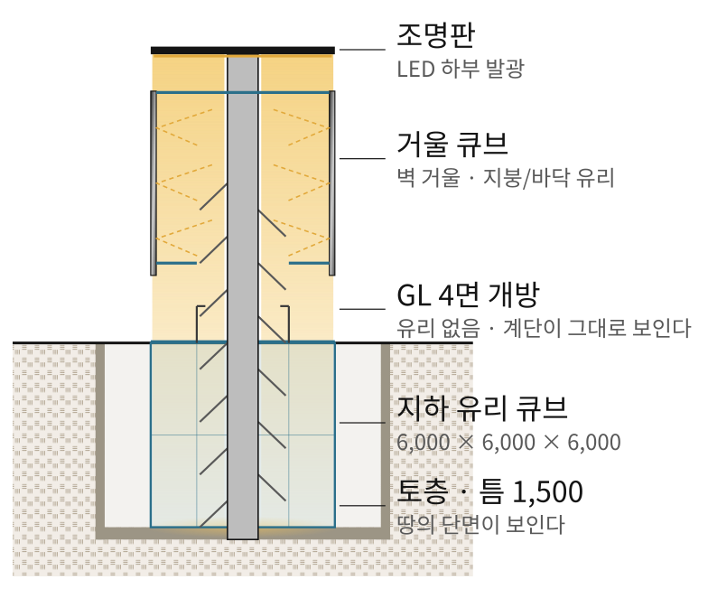
같은 크기의 큐브 두 개를 땅을 경계로 위아래에 놓는다.
같은 6,000 외곽이 위아래로 반복되고, 기둥 하나가 모든 겹을 꿴다.
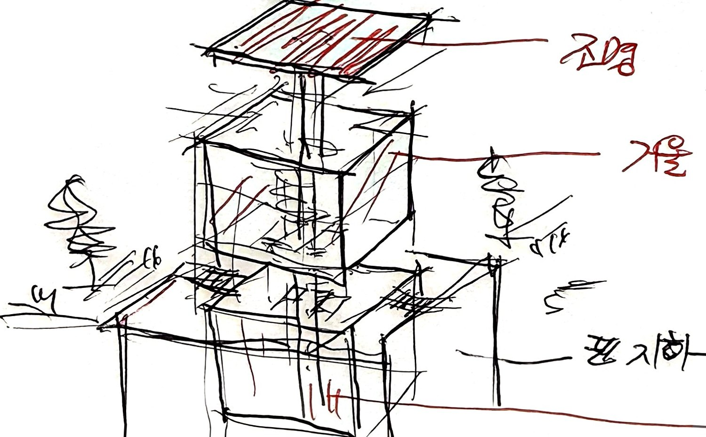
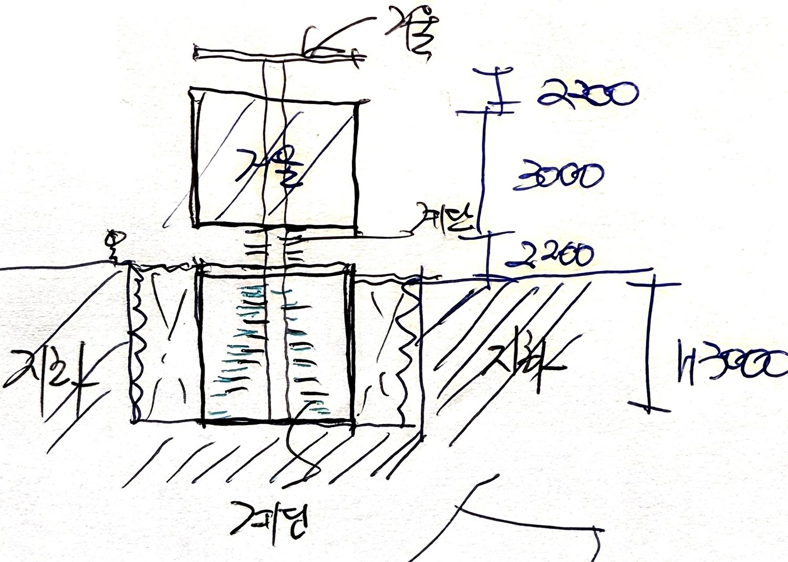
판단 기준 땅을 드러내는가풍경에 스며드는가실제로 지을 수 있는가
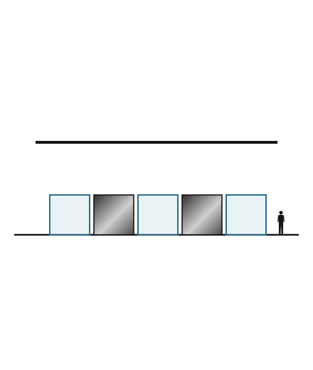
A · 반복
투명/거울 박스의 수평 반복과 떠 있는 한 줄.
땅과 하늘을 만나지 못하고 지면 위에 흩어진다.
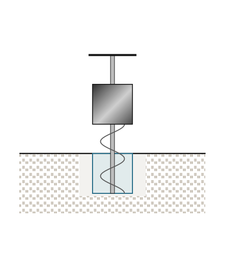
B · 분리
거울 상자는 위로, 유리방은 땅속으로. 3m, 나선 계단.
땅이 열리기 시작했지만 상자가 작고 계단이 좁다.
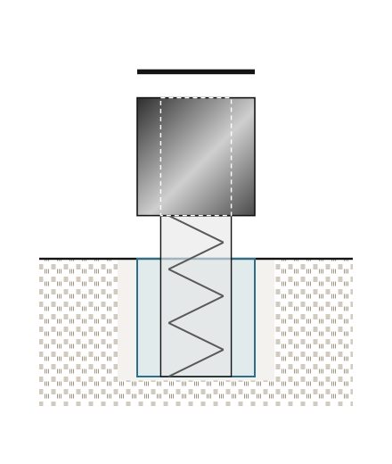
C · 대칭
6,000 큐브 두 개와 직선 계단 코어.
위아래가 대칭이 되었으나 계단 코어가 공간을 차지한다.
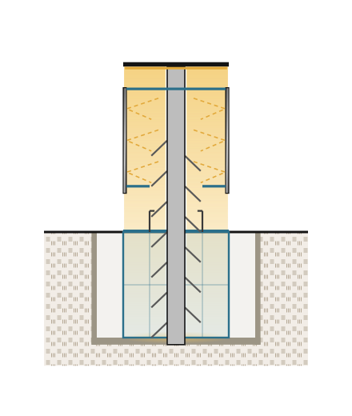
D · 수렴 → 최종안
□1,000 기둥 하나에 계단을 감고 큐브를 매단다.
공간을 비우고 빛을 땅속까지 보낸다.
같은 크기의 두 상자에서 하나의 수직으로. 클릭할 때마다 한 단계씩 진행된다.
남북 단면 위에서 서울(북위 37.6°)의 해를 시간대로 따라간다. 거울 벽은 빛을 되비추고, 조명판이 유리 지붕을 덮어 낮의 해는 옆에서 땅속으로 든다. 해가 지면 조명판이 켜진다.
큐브 아래 2,200 띠로 든 빛이 지하 큐브 안 기둥을 비춘다.
유입지면 그레이팅 → 1,500 토층 틈에서 흙의 온도로 식는다.
바닥 갤러리지하 바닥 둘레 300으로 유리 큐브 안에 든다. 겨울엔 댐퍼.
굴뚝기둥을 따라 오르고 큐브 바닥 귀퉁이에서 더해진다. 보이드 약 14m.
배기유리 지붕 가운데 갤러리로. 조명판이 비를 가린다.
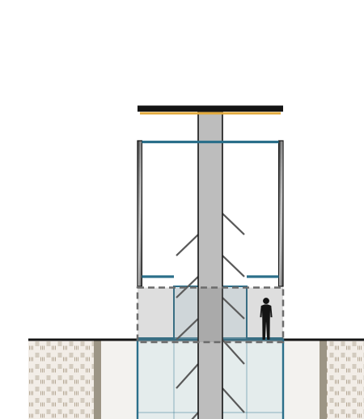
GL ±0
발아래로 땅속의 유리 큐브와 흙의 단면이 열린다. 머리 위엔 거울 큐브가 떠 있다.
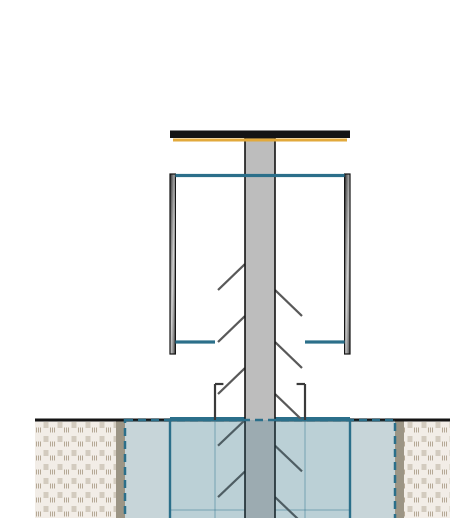
−6,000
기둥을 감아 6m를 내려가면 유리 너머 1,500 틈에 흙의 층이 서 있다.
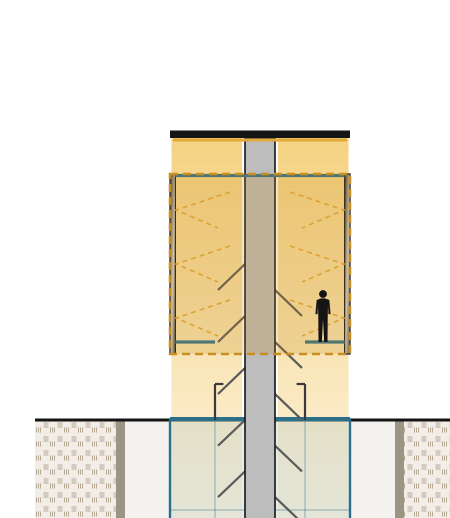
+2,600 ~ +5,200
거울 큐브 안 상부 전망참에 서면 사방의 거울과 위의 빛, 아래의 땅이 한 장면에 겹친다.
거울 큐브는 땅을 딛지 않는다. 기둥 머리에서 8방향으로 뻗은 지붕보에 행거 포스트 16개로 매달린다.
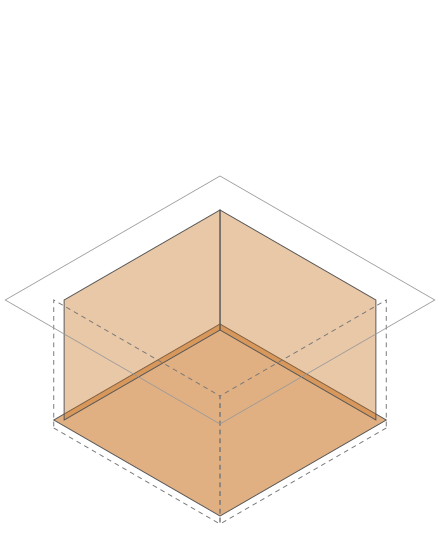
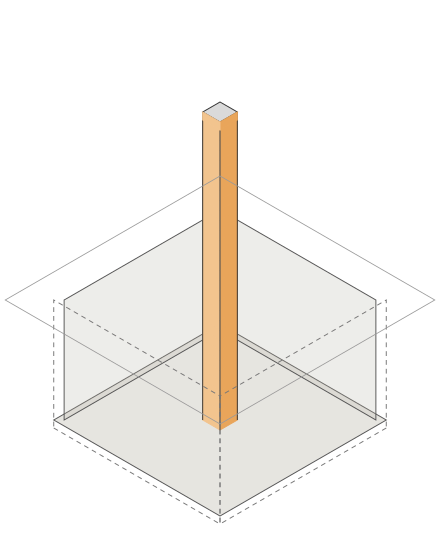
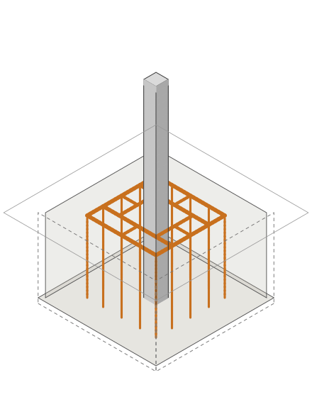
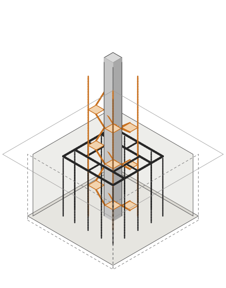
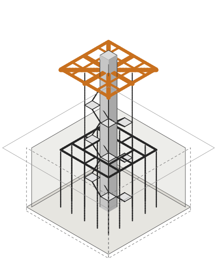
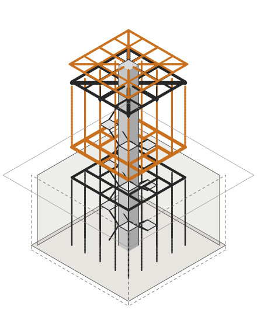
단위 mm. 부재 치수는 계획 단계 가정값으로, 구조 검토로 확정한다.
공원 속 스밈, 한 바퀴
영상: AI 생성 (Gemini)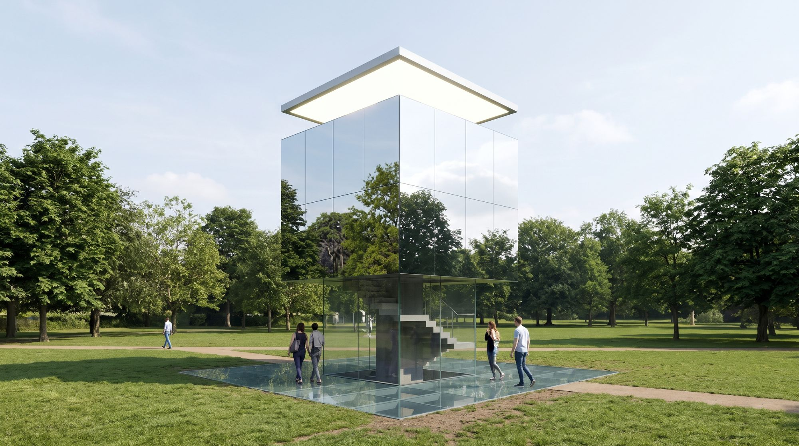
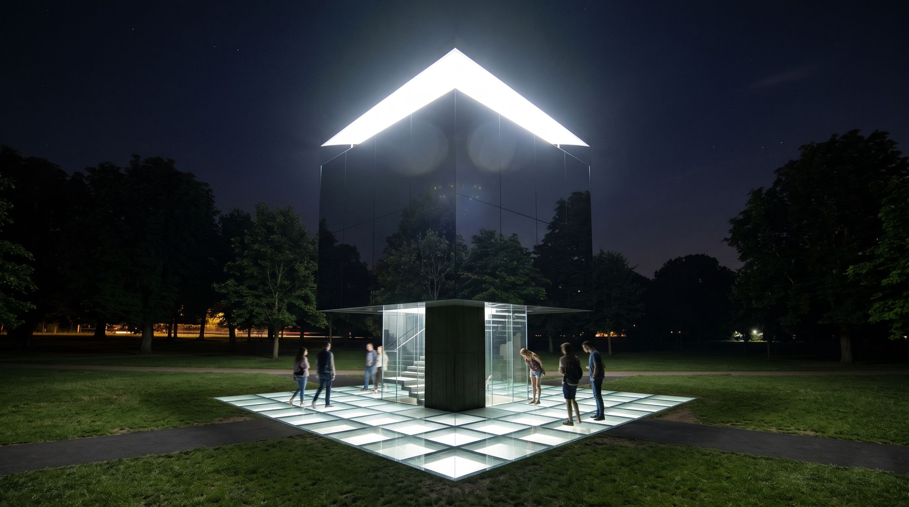
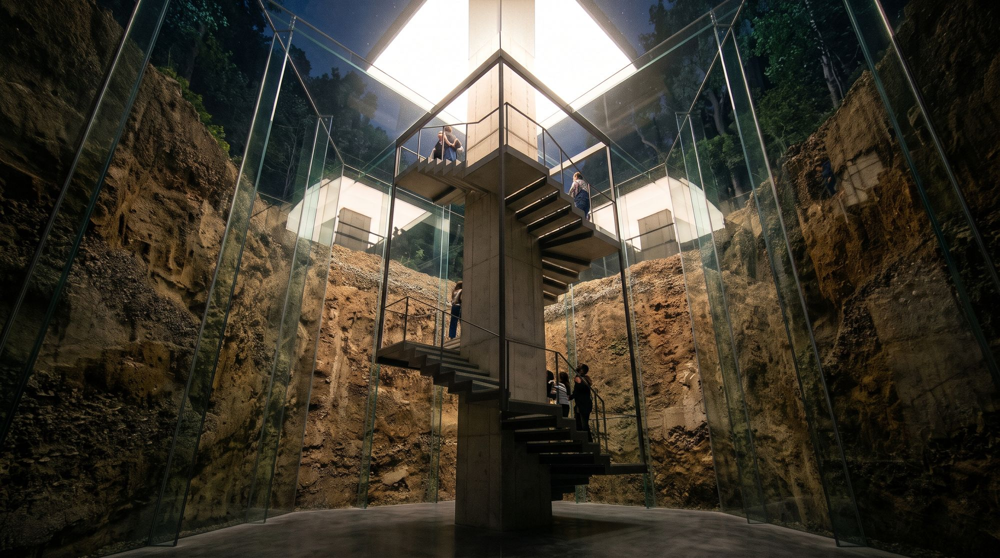
6,000 유리 큐브는 땅속에, 6,000 거울 큐브는 하늘에. 1,000 기둥 하나가 둘을 꿰고, 그 위에서 빛의 판이 켜진다.
조명판의 빛이 유리 지붕과 거울 사이를 지나 지면의 유리 격자를 밝히고, 그 아래 흙의 단면까지 닿는다.
기둥을 감아 6m를 내려가면 유리벽 너머 1,500 틈에 흙의 층이 서 있다. 머리 위로는 하늘과 거울 큐브가 열린다.
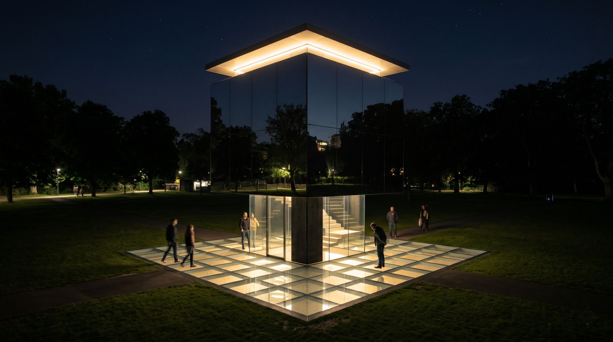
땅을 드러내는 투명과 풍경을 지우는 거울, 어느 쪽이 더 '스며드는' 것일까?
땅에 닿지 않고 떠 있는 거울 상자는 땅에 속할까, 하늘에 속할까?
빛이 땅속까지 내려갈 때, 땅은 '아래'일까 또 하나의 '하늘'일까?
스밈 SEEP · 아트 파빌리온 제안 · 2026 · 렌더 이미지: AI 렌더링 (Gemini) · 도면과 다이어그램은 계획안 기준